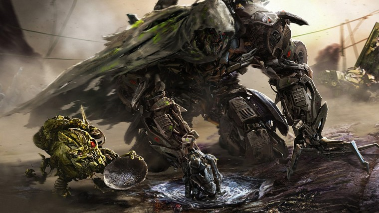

Megatron (Transformers Cinematic Universe)
Megatron, znany również jako Galvatron w swojej prototypowej formie, jest głównym antagonistą w filmowej franczyzie Transformers Cinematic Universe. Jest niezwykle potężnym, niszczycielskim i tyranicznym Decepticonem, pragnącym rządzić Ziemią poprzez doprowadzenie do wyginięcia ludzkości. Jego ideologia powoduje częste konflikty z jego dawnym bratem w armii oraz arcywrogiem znanym jako Optimus Prime. Był dawnym uczniem Sentinela Prime'a, wyznaczonym jako obrońca Cybertronu i komendant siły defensywnej. Urażony statusem Prime'a swojego brata oraz bycia faworytem Sentinela, Megatron został skorumpowany przez Upadłego, będącego prawdziwym założycielem Decepticonów, prowadząc do odbudowania frakcji Decepticonów. Po śmierci Upadłego oraz Sentinela Prime, Megatron został wskrzeszony przez technologię KSI, Cmentarnego Wiatru oraz Lockdowna, ostatecznie zawierając sojusz z Quintessą w celu odbudowania Cybertronu poprzez zniszczenie Ziemi.
Osobowość:
W przeszłości Megatron był obrońcą Cybertronian i bliskim przyjacielem Optimusa Prime’a, którego traktował jak brata. Nosił wtedy inne imię, podobnie jak Optimus. Konflikt światopoglądowy z Optimusem doprowadził do wewnętrznej przemiany Megatrona, wypaczenia charakteru oraz zrodzenia u niego pożądania władzy i dominacji. Megatron znany był ze swojego okrucieństwa i bezwzględności. Miał dosłownie żelazny charakter, nie tolerował sprzeciwów czy niesubordynacji. Był wyśmienitym strategiem, jednak jego wadą była arogancja i zadufanie w sobie. Odnosił się z pogardą do wszelkich innych form życia, szczególnie ludzkości. Budził grozę nawet we własnych szeregach.